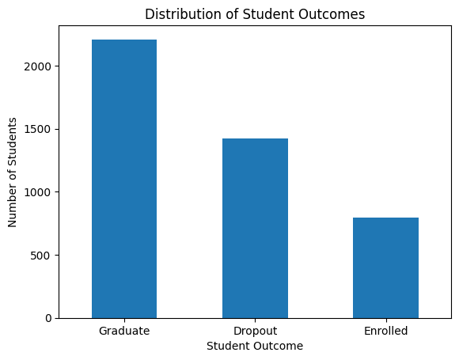
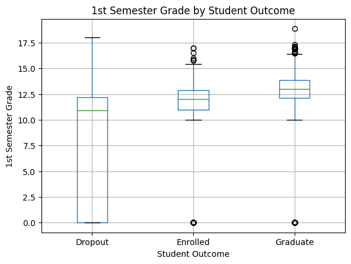
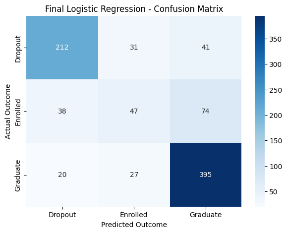
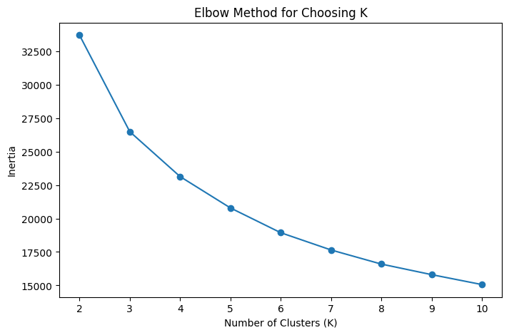
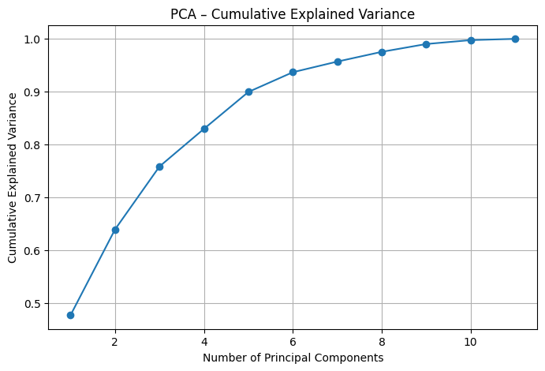
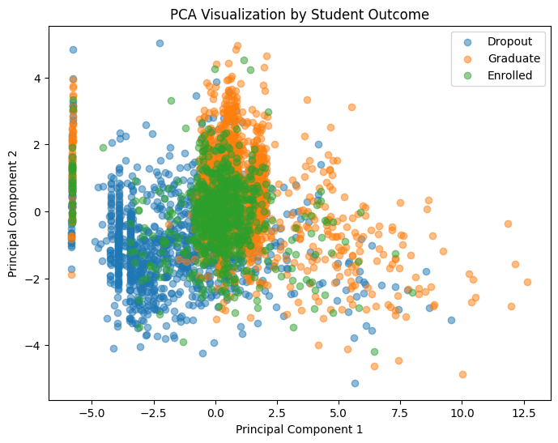
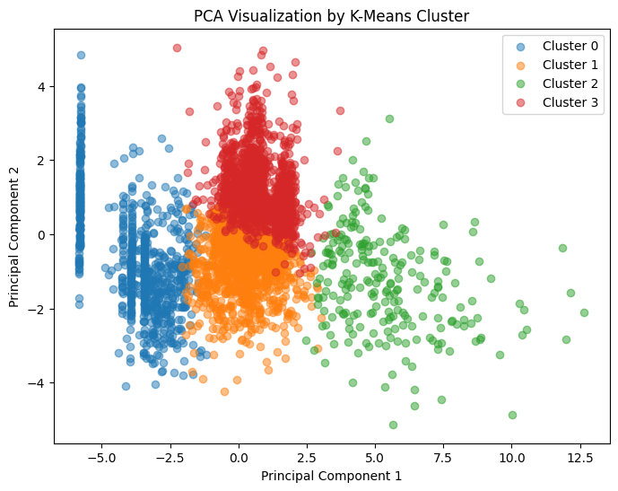

Target distribution
Graduate is the largest group in the plotted distribution, followed by Dropout; Enrolled is the smallest. The dataset contains 4,424 records across these three outcome classes.

First-semester grades
The median first-semester grade is higher for Graduate than for Enrolled and Dropout. Dropout grades show a wider spread, including many values at zero. This is a descriptive pattern in the data, not evidence that grades cause a particular outcome.

Classification model comparison
Logistic Regression had the highest reported accuracy and weighted F1 among the four compared models and was selected for its overall performance and interpretability.
- Logistic Regression: 73.9% accuracy; 72.4% weighted F1.
- Random Forest: 73.0% accuracy; 70.2% weighted F1.
- Tuned Random Forest: 71.5% accuracy; 64.8% weighted F1.
- Balanced Logistic Regression: 69.9% accuracy; 71.2% weighted F1.
The confusion matrix indicates Dropout and Graduate are reasonably well distinguished, while Enrolled is more difficult to classify.

K-Means clustering (K = 4)
The reduction in inertia becomes less pronounced around K = 4, supporting the choice of four clusters. Clustering used 11 standardized academic and enrollment features; the target was not used to construct the clusters.
- Cluster 0: 778 students (17.6%), interpreted as low performance; 81.75% Dropout was reported.
- Cluster 1: 1,871 students (42.3%), interpreted as intermediate; 45.54% Graduate and 29.24% Dropout were reported.
- Cluster 2: 240 students (5.4%), interpreted as high engagement; 66.25% Graduate was reported.
- Cluster 3: 1,535 students (34.7%), interpreted as strong performance; 73.09% Graduate was reported.
Only documented outcome proportions are listed. The reported differences describe associations between cluster membership and outcomes; they do not establish causes.

PCA: explained variance
PCA was applied to the selected 11 academic and enrollment features. Five components retained approximately 89.95% of the variance; the first component retained 47.73%, and the first three retained 75.85%.

PCA by student outcome
The outcome classes overlap in the reduced feature space. The first components therefore do not separate Dropout, Enrolled, and Graduate into completely distinct groups.

PCA by K-Means cluster
The clusters occupy distinguishable regions in the reduced feature space, providing a complementary view of similarities in academic and enrollment characteristics.
Anomalies, observations and patterns
- Classification: Logistic Regression led the model comparison in accuracy (73.9%) and weighted F1 (72.4%); Enrolled was harder to distinguish.
- Clustering: K-Means produced four groups with different reported outcome proportions. These are descriptive associations, not causal effects.
- Dimensionality reduction: Five PCA components retained approximately 89.95% of variance in the selected 11 features.
- Limitation: Findings describe this dataset and should not be interpreted as causal explanations or guarantees about individual students.